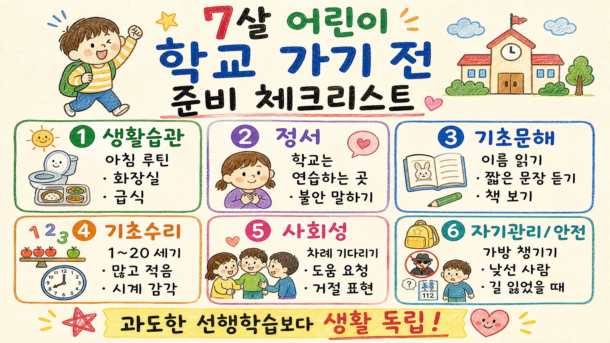
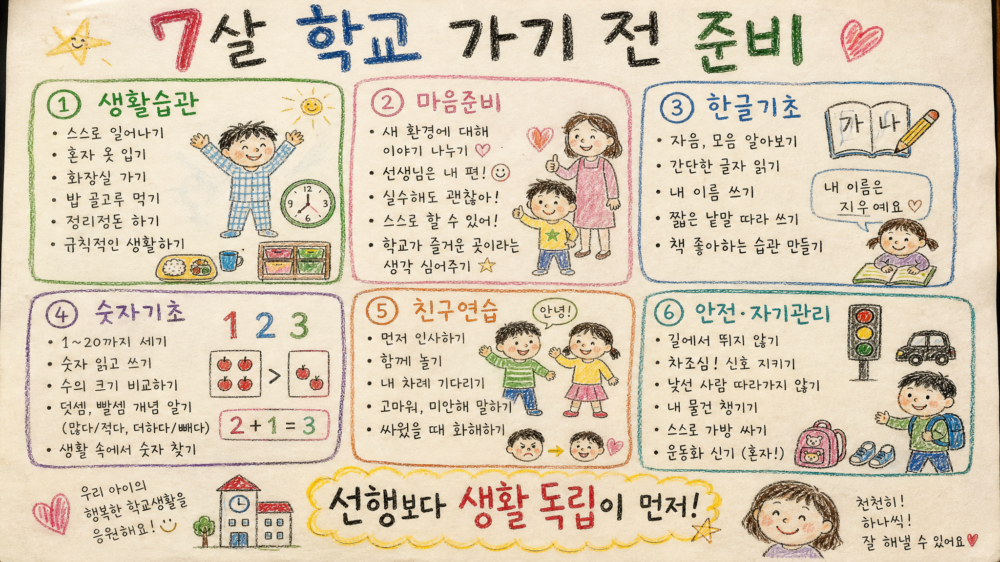
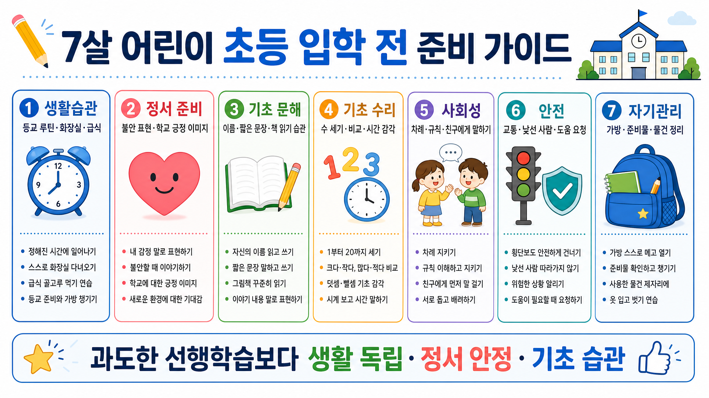

7살 어린이 학교 가기 전 사전 학습·생활 준비 보고서
핵심: 초등 입학 준비는 과도한 선행학습보다 생활 독립, 정서 안정, 기초 문해·수리 감각, 사회성, 안전 습관을 균형 있게 만드는 일이다.
인포그래픽 1 · 보고서모드1 기본 손그림 스타일

인포그래픽 2 · 보고서모드2 실제 종이 스캔 느낌 손그림 스타일

인포그래픽 3 · 보고서모드3 깔끔한 고해상도 정보형 스타일

핵심 결론
- 🎒 입학 전 최우선은 “혼자 해내는 학교 생활 기술”이다.
- 📚 한글·수학은 선행 진도보다 듣기, 말하기, 수 감각, 책 친숙함이 중요하다.
- 💬 도움 요청, 거절 표현, 차례 기다리기 같은 사회·정서 기술이 적응을 좌우한다.
1. 준비의 기준: 많이 아는 아이보다 학교 하루를 버틸 수 있는 아이
7살 어린이의 초등 입학 전 준비는 “미리 1학년 공부를 끝내기”가 아니다. 학교라는 환경에서 정해진 시간에 일어나고, 자기 물건을 챙기고, 화장실을 다녀오고, 선생님 설명을 듣고, 친구와 규칙 안에서 지내는 힘을 만드는 과정이다.
따라서 부모가 볼 기준은 문제집 진도보다 다음 질문에 가깝다. 아이가 아침에 덜 싸우고 움직일 수 있는가? 모르는 것이 있을 때 말로 도움을 요청하는가? 자기 이름과 물건을 구분하는가? 싫은 일을 당했을 때 말로 표현하는가?
2. 생활습관: 입학 적응의 가장 현실적인 기초
| 영역 | 입학 전 연습 | 부모의 도움 방식 |
|---|---|---|
| 아침 루틴 | 기상 → 세수 → 옷 입기 → 아침 → 가방 → 신발 | 그림 순서표를 붙이고 매일 같은 순서로 반복 |
| 화장실 | 혼자 들어가기, 닦기, 물 내리기, 손 씻기 | 실수해도 혼내지 말고 절차를 다시 연습 |
| 급식 | 정해진 시간 안에 먹기, 흘렸을 때 말하기 | 처음 먹는 반찬을 조금씩 경험하게 하기 |
| 옷·신발 | 지퍼, 단추, 외투, 운동화 정리 | 느려도 기다리며 마지막 단계만 도와주기 |
| 가방·준비물 | 필통, 물병, 알림장, 겉옷 넣고 빼기 | 부모가 대신 싸기보다 함께 체크리스트 확인 |
3. 정서 준비: 학교를 겁주는 말보다 예측 가능하게 만들기
“학교 가면 혼난다”는 말은 단기적으로 행동을 멈추게 할 수 있지만, 입학 불안을 키울 수 있다. 학교는 완벽한 아이만 가는 곳이 아니라 배우고 연습하는 곳이라고 설명하는 편이 좋다.
- “모르면 선생님께 물어보면 돼.”
- “처음엔 긴장하는 게 자연스러워.”
- “실수해도 다시 하면 돼.”
- “엄마·아빠가 끝나고 데리러 오거나 집에서 만날 거야.”
분리 불안이 큰 아이는 실제 등교 시간에 맞춰 산책하거나 학교 주변을 지나가 보는 식으로 낯섦을 줄이는 것이 도움이 된다.
4. 기초 문해: 한글 떼기보다 언어 사용 능력
입학 전에 한글을 완벽히 읽고 쓰지 못해도 큰 문제가 되는 것은 아니다. 다만 자기 이름을 알아보고, 짧은 안내를 듣고, 자기 생각을 말하는 힘은 학교 생활에 바로 쓰인다.
그림책을 함께 보고 제목, 등장인물, 다음 장면을 이야기하기
자기 이름, 가족 이름, 자주 쓰는 물건 이름 알아보기
“가방에서 물병 꺼내 식탁에 놓기”처럼 2단계 지시 듣기
“왜 속상했는지”, “무엇이 필요했는지” 말로 설명하기
5. 기초 수리: 문제풀이보다 수 감각
수학 선행은 많이 할수록 좋은 것이 아니다. 7살에게 필요한 것은 숫자와 양, 순서, 시간의 기본 감각이다.
| 준비할 감각 | 생활 속 연습 |
|---|---|
| 수 세기 | 계단, 과일, 장난감을 1부터 20까지 세어 보기 |
| 많고 적음 | 간식 접시를 보며 어느 쪽이 더 많은지 비교 |
| 순서 | 첫째, 둘째, 마지막 / 어제, 오늘, 내일 말하기 |
| 시간 | “긴 바늘이 12에 오면 정리”처럼 시계와 활동 연결 |
| 공간 | 위·아래, 앞·뒤, 오른쪽·왼쪽을 놀이로 익히기 |
6. 사회성: 친구를 많이 사귀기보다 말하는 문장 준비
학교에서는 친구 관계의 기술이 매일 필요하다. 특히 장난, 거절, 기다림, 규칙 지키기를 말로 연습해 두면 갈등이 줄어든다.
- “같이 놀래?”
- “나도 해도 돼?”
- “지금은 내가 먼저 하고 다음에 줄게.”
- “싫어. 하지 마.”
- “선생님, 친구가 계속 해서 힘들어요.”
- “미안해. 다시 해볼게.”
부모는 아이가 무조건 양보하게 하기보다, 자기 차례를 기다리되 싫은 행동은 분명히 말하는 균형을 알려주는 것이 좋다.
7. 안전과 도움 요청: 혼자 해결보다 어른에게 말하기
| 상황 | 아이에게 연습시킬 말 |
|---|---|
| 몸이 아픔 | “선생님, 배가 아파요 / 머리가 아파요.” |
| 화장실이 급함 | “화장실 가도 돼요?” |
| 길을 모르겠음 | “어디로 가야 하는지 모르겠어요.” |
| 물건을 잃어버림 | “제 물건을 못 찾겠어요.” |
| 낯선 사람이 부름 | 따라가지 않고 선생님·보호자에게 바로 말하기 |
| 교통 | 멈추기, 좌우 보기, 손 들기, 뛰지 않기 |
8. 부모가 피해야 할 것
- 과도한 선행학습: 입학 전부터 공부 피로감과 실패감을 만들 수 있다.
- 비교: 친구·형제와 비교하면 자신감보다 불안이 커진다.
- 과잉 대행: 부모가 전부 챙기면 아이는 학교에서 더 당황한다.
- 학교로 겁주기: 학교 이미지를 처벌 공간으로 만들지 않는 것이 좋다.
9. 4주 준비 루틴 예시
| 기간 | 집중 목표 | 하루 10~20분 실천 |
|---|---|---|
| 1주차 | 아침·화장실·옷 입기 | 그림 순서표로 등교 루틴 놀이 |
| 2주차 | 가방·물건·정리 | 필통·물병·책 한 권을 직접 넣고 빼기 |
| 3주차 | 문해·수 감각 | 그림책 1권, 숫자 세기, 시계 약속 1개 |
| 4주차 | 사회성·도움 요청 | 역할놀이로 “선생님 도와주세요” 말하기 |
최종 판단
7살 어린이의 입학 전 준비는 “학교 공부를 먼저 배우는 일”이 아니라 “학교 생활을 덜 무섭고 더 예측 가능하게 만드는 일”이다. 생활습관과 정서 안정이 바탕이 되고, 그 위에 기초 문해와 수 감각, 사회성, 안전 습관이 얹힐 때 아이는 초등 1학년 생활에 훨씬 부드럽게 적응한다.
부모의 역할은 아이를 미리 초등학생처럼 몰아붙이는 것이 아니라, 매일 작은 독립 경험을 반복하게 돕는 것이다.
공개 가능한 일반 교육·양육 지식을 바탕으로 작성한 참고용 보고서입니다. 아이의 발달, 건강, 정서 어려움이 크다면 담임교사·소아청소년과·전문상담기관과 상의하는 것이 좋습니다.
Jeremy's Insight by 🤖 딸깍봇 https://blog.naver.com/jeremylee0213